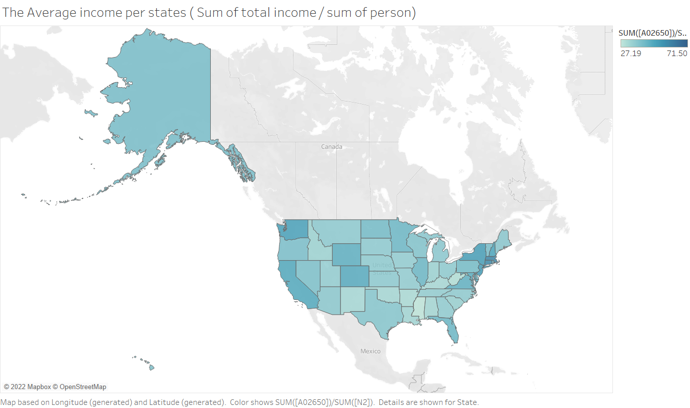

Photo by Kelly Sikkema on Unsplash
Photo by Kelly Sikkema on Unsplash
Exploring the incoming related to investment between different states in America
-
People need food and money is essential to live. People are living with different standards of how they are living with their life. In this data analysis, I would like to find the relationship between income per person in different states and income per person related to the education expense. Is there any difference between different states? This result can be beneficial to the US government and other researchers for where wealth is related to education and location is justified for being wealthy. Government can use US taxpayer money to make the country even better.

IRS tax US residents to benefit people including building roads and bridges or provide basic utility for US residents. The IRS also collects how much taxpayers pay and how much they can be deducted from the government. The nature of the data is from the filled in form from the taxpayers. Individual tax statistics data are numerical and discrete. The IRS provides data for the tax result each year. The individual tax statistics data are a very detailed category for each tax element. Too many variables means the outcome can be overlooked and need much time to research. Individual tax statistics only provide the number of taxpayers in each state. There are no names or details of each person with their tax payment. Privacy and quality are accurate and easy to read.
subscribe via RSS